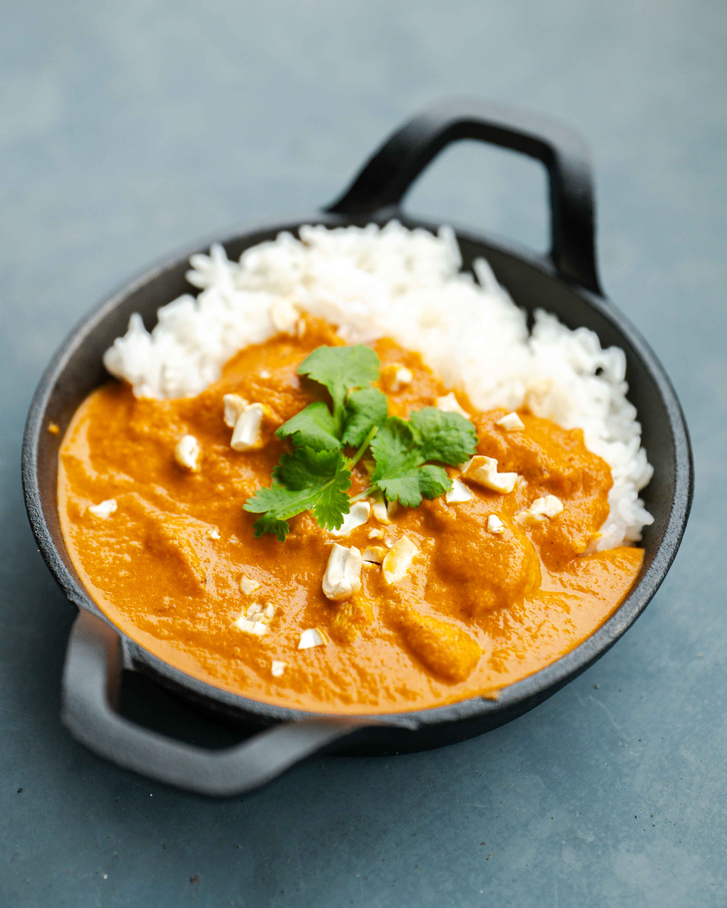

Butter Chicken

Description
A delicious, simple winter meal with plenty spice and fat
Ingredients
- 60g Tomato Purée
- 105g Greek Yoghurt
- 10g Garam Masala
- 5g Chili Powder
- 4 cloves of Garlic
- 8g Ginger
- 45ml Mango Chutney
- 2 tsp Salt
- 1000g Chopped Chicken Breast
- 150ml Water
- 45ml Single Cream
- Handful coriander to top off
Procedure
- Blend yoghurt, spices and tomato purée
- Pour it over the chicken, leave it for 30+ minutes in the fridge to let marinate.
- Heat and cook chicken on a high temperature
- When chicken is tender and thoroughly cooked, add cream, water to balance the sauce
- Top off the dish with coriander and mango chutney, supplement with rice